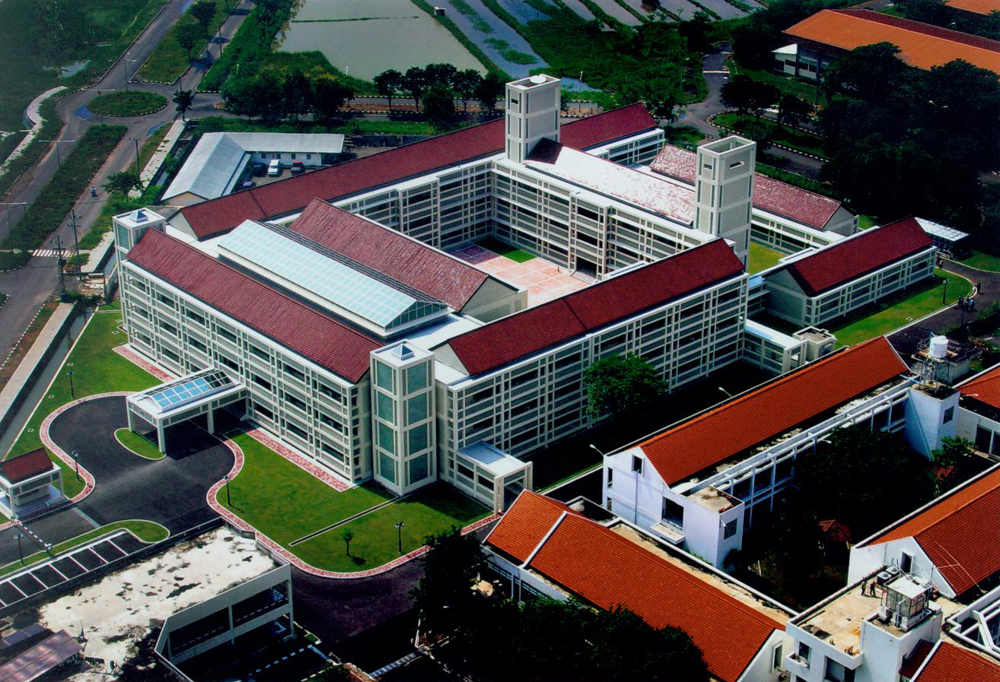

About

Tan Malaka
Tan Malaka adalah sosok laki laki kelahiran Suliki, Sumatra Barat pada tanggal 02 Juni 1897 dengan nama asli Ibrahim gelar Datuk Tan Malaka. Anak dari pasangan Rasad Caniago dan Sinah Sinabur ini merupakan tamatan Kweekschool Bukit Tinggi pada umur 16 tahun di tahun 1913, dan dilanjutkan ke Rijks Kweekschool di Haarlem, Belanda. Setelah lulus dari Rijks Kweekschool, Tan Malaka kembali ke Indonesia dan mengajar di sebuah perkebunan di Deli, dari sinilah Tan Malaka menemukan ketimpangan sosial di lingkungan sekitar dan muncullah sifat radikal Tan Malaka.
Tan Malaka merupakan sosok yang memiliki sifat sosialis dan politis. Pada tahun 1921 dia pergi ke Semarang untuk mulai menerjuni dunia politik. Kiprahnya dalam dunia politik sangat mengesankan. Hal ini didukung dengan pemikiran Tan Malaka yang berbobot dan berperan besar dalam sejarah perjuangan kemerdekaan Indonesia.
Berbagai halangan dan rintangan yang dihadapi Tan Malaka dalam memperjuangkan kemerdekaan Indonesia, mulai dari penangkapan dan pembuangan di Kupang, pengusiran dari negara Indonesia, seringnya konflik dengan Partai Komunis Indonesia hingga pernah diduga kuat sebagai dalang dibalik penculikan Sutan Sjahrir pada bulan Juni 1946. Berbagai peran pentingpun diraih Tan Malaka, diantaranya kepemimpinan dalam berbagai organisasi dan partai. Sempat mendirikan partai PARI pada tahun 1927 dan Partai Murba pada tahun 1948, hingga mendirikan sekolah serta mengajar di China pada tahun 1936 dan sekolah tinggi Singapura. Ada hal yang sangat penting dalam kemerdekaan Indonesia pada tahun 1945,dimana peranan Tan Malaka dalam mendorong para pemuda yang bekerja di bawah tanah masa pendudukan Jepang agar mencetuskan "Revolusi" yang tepatnya pada tanggal 17 Agustus.
Tan Malaka terbunuh di Kediri Jawa Timur pada tanggal 19 Februari 1949. Sebagian besar hidupnya dalam pengusiran dan pembuangan di luar Indonesia. Pemerintah Indonesia menyatakan Tan Malaka sebagai pahlawan Nasional melalui Ketetapan Presiden RI nO 53 tanggal 23 Maret 1963.